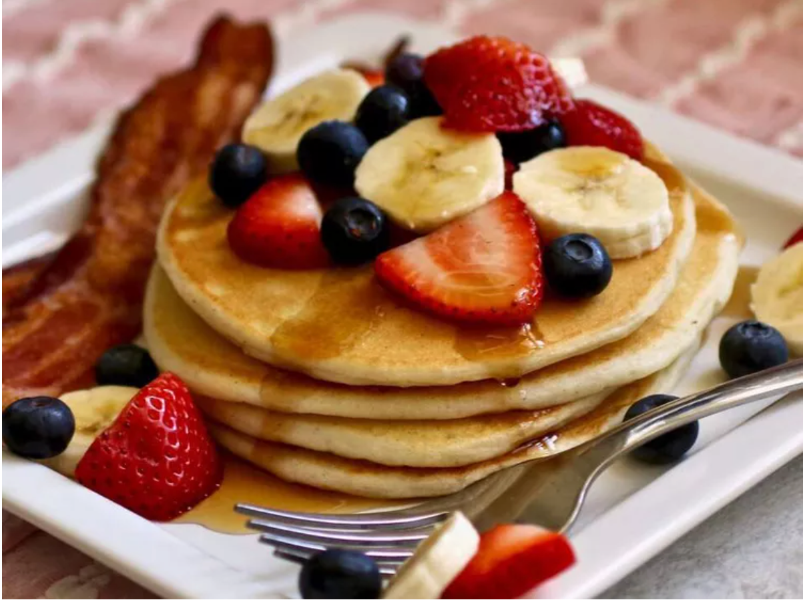

Grandma's Buttermilk Pancakes

Description
Get ready for a breakfast experience like no other with 'Grandma's Buttermilk Pancakes'! This recipe has been passed down for generations and is sure to delight your taste buds. With its fluffy texture and irresistible buttery flavor, you won't be able to resist these pancakes. The secret ingredient? Buttermilk, which gives these pancakes their signature tang and makes them extra moist. Perfect for a lazy Sunday morning or a quick weekday breakfast, these pancakes are sure to become a family favorite. Try them today and taste the love that goes into every bite!
ingredients
- 3 cups all-purpose flour
- 1 tablespoon white sugar
- 1 teaspoon salt
- 1 teaspoon baking soda
- 3 cups buttermilk, or more as needed
- ½ cup vegetable oil
- 2 large eggs
Steps
-
Step 1
- Preheat a griddle to 400 degrees F (200 degrees C) according to manufacturer's instructions.
-
Step 2
- Combine flour, sugar, salt, and baking soda in a mixing bowl; mix thoroughly.
- Add 3 cups buttermilk, vegetable oil, and eggs; mix thoroughly by hand with a spoon.
- Add more buttermilk to adjust consistency if needed.
- Batter should be slightly lumpy but not too thick; pancakes will be flat if batter is overmixed.
-
Step 3
- Working in batches, spoon batter onto the hot griddle.
- Cook until the bubbles that form on the top surface begin to pop, 3 to 4 minutes.
- Flip and cook until the other side is golden brown, about 2 minutes more.